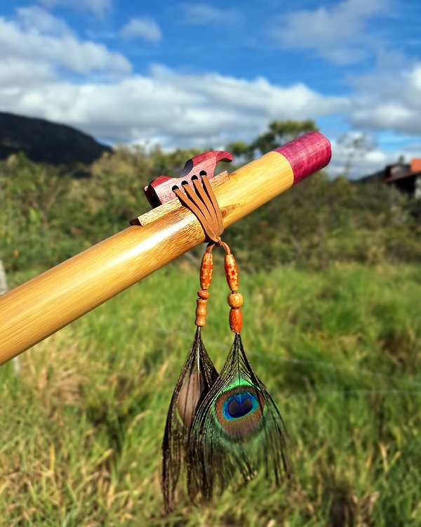
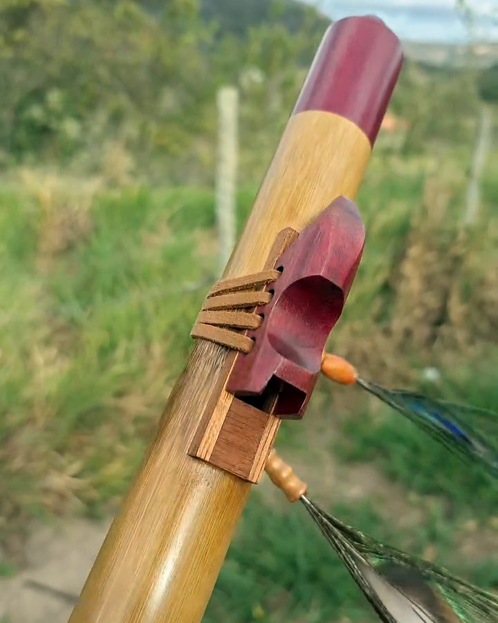

Flauta nativa de bambu
- Tons
- Do Ré agudo ao Fá
- Material
- bambu, totem em madeira
a partir de R$ 380
Ver detalhes Perguntar no WhatsApp
Flauta de sopro direto, de origem norte-americana, feita aqui em bambu ou madeira. O ar entra por uma câmara no topo, passa sob o totem — a peça de madeira amarrada sobre o ninho — e sai pela janela, onde nasce o som. A escala é pentatônica menor: qualquer sequência de notas soa bem, por isso é a flauta mais fácil para quem nunca tocou. Faço em vários tons, simples, dupla com drone ou com totem esculpido.
A flauta nativa é a mais intuitiva das minhas flautas. O totem conduz o ar até a janela, então o som sai já no primeiro sopro, sem técnica de embocadura. Os cinco furos são afinados na escala pentatônica: quase qualquer sequência de notas soa bem junta. Por isso é a que indico para quem nunca tocou e para presente.
Valores a partir de; o valor exato, com tom, madeira e opcionais, aparece no Monte sua flauta.
a partir de R$ 380
Ver detalhes Perguntar no WhatsAppa partir de R$ 930
Ver detalhes Perguntar no WhatsAppa partir de R$ 730
Ver detalhes Perguntar no WhatsAppa partir de R$ 680
Ver detalhes Perguntar no WhatsAppFaço em bambu ou em madeira, nos tons naturais e nos sustenidos. A NAF tem cinco furos e é afinada na escala pentatônica, por isso quase qualquer sequência de notas soa bem junta. É a flauta que indico para quem nunca tocou.
A dupla (com drone) tem um segundo tubo que segura uma nota contínua, o drone, por baixo da melodia.
Toque numa foto para ampliar e passar as outras.
O totem é a peça de madeira amarrada sobre o ninho, que conduz o ar até a janela. Tenho modelos de catálogo, como coruja, águia, lobo, cavalo, tigre e elefante, e faço totem sob encomenda.
Frete à parte, calculado pelo CEP. A dupla e a marchetaria mudam o valor; o Monte sua flauta mostra cada combinação.
Por que custa o que custa: o valor reflete as horas de bancada: seleção do material, torno, afinação fina nas três oitavas e acabamento completo. Veja como uma flauta é feita.
Gravação minha. Ao lado, a foto da mesma flauta.

 Flauta nativaFlauta nativa de bambu em Sol, bocal e totem de cerejeira
Flauta nativaFlauta nativa de bambu em Sol, bocal e totem de cerejeira